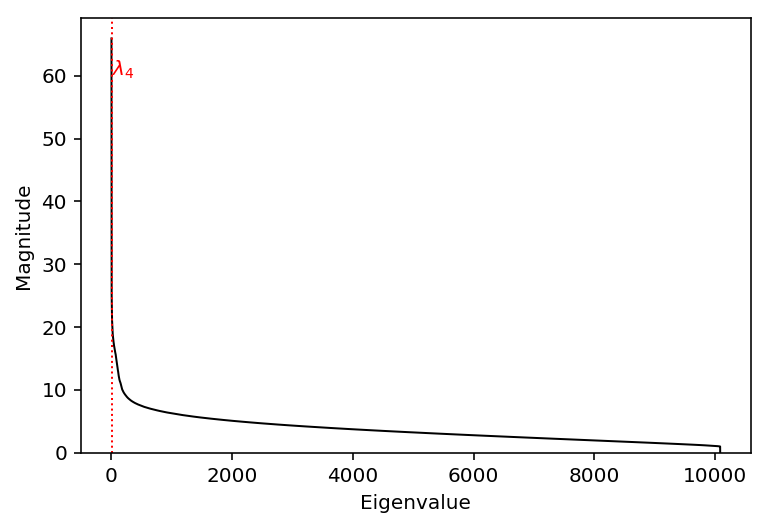
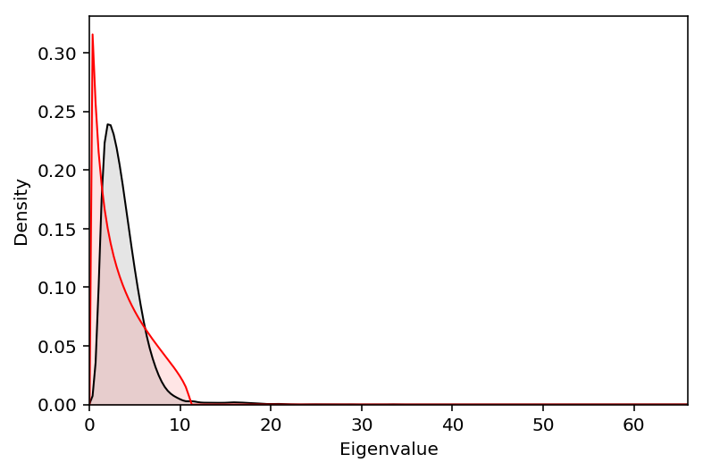

Population structure in single cell data
Table of Contents
Download the data
Download the data generated in Zheng et al 2016.
mkdir -p cd8+_cytotoxic_t_cells
curl -s "http://cf.10xgenomics.com/samples/cell-exp/1.1.0/cytotoxic_t/cytotoxic_t_filtered_gene_bc_matrices.tar.gz" | tar xzf - -C cd8+_cytotoxic_t_cells
mkdir -p cd19+_b_cells
curl -s http://cf.10xgenomics.com/samples/cell-exp/1.1.0/b_cells/b_cells_filtered_gene_bc_matrices.tar.gz | tar xzf - -C cd19+_b_cells
Read the data
Read the B cell data.
data = si.mmread('/project2/mstephens/aksarkar/projects/singlecell-ideas/data/10xgenomics/cd19+_b_cells/filtered_matrices_mex/hg19/matrix.mtx').A data = data[data.sum(axis=1) > 0] data.shape
(15858, 10085)
Principal components analysis
Fit incremental SVD (to avoid memory problems).
<<imports>> <<read-data-impl>> res = skd.IncrementalPCA().fit(data.T) with open('svd.pkl', 'wb') as f: pickle.dump(res, f)
sbatch --partition=broadwl -n1 -c28 --exclusive --mem=32G --job-name=svd --out svd.out --time=60:00 #!/bin/bash source activate scqtl python /project2/mstephens/aksarkar/projects/singlecell-ideas/code/svd.py
Read the results.
with open('/scratch/midway2/aksarkar/singlecell/svd.pkl', 'rb') as f: res = pickle.load(f)
Plot the eigenspectrum of the data.
plt.clf() plt.plot(np.arange(res.singular_values_.shape[0]), np.sqrt(res.singular_values_), lw=1, c='k') elbow = np.where(res.singular_values_[1:] / res.singular_values_[:-1] > 0.9)[0].min() plt.axvline(x=elbow, c='r', lw=1, ls=':') plt.text(s='$\lambda_{}$'.format(elbow + 1), x=5, y=60, color='r') plt.xlabel('Eigenvalue') plt.ylabel('Magnitude') _ = plt.ylim(0, plt.ylim()[1])

The Marchenko-Pastur distribution describes the noise distribution of the eigenvalues, under the null that all eigenvalues are 1.
def marchenko_pastur_pdf(x, lambda_, sigma): lower = np.square(sigma * (1 - np.sqrt(lambda_))) upper = np.square(sigma * (1 + np.sqrt(lambda_))) x = np.ma.masked_outside(x, lower, upper) return (np.sqrt((upper - x) * (x - lower)) / (2 * np.pi * np.square(sigma) * x * lambda_)).filled(0)
Plot the observed eigenvalues against the estimated noise distribution.
plt.clf() eig = np.sqrt(res.singular_values_) f = st.gaussian_kde(eig) grid = np.linspace(0, eig.max(), num=200) plt.plot(grid, f(grid), lw=1, c='k') plt.fill_between(grid, f(grid), color='k', alpha=.1) y = marchenko_pastur_pdf(grid, res.singular_values_.shape[0] / res.n_components_, 1.85) plt.plot(grid, y, c='r', lw=1) plt.fill_between(grid, y, color='r', alpha=.1) plt.xlim(0, eig.max()) plt.ylim(0, plt.ylim()[1]) plt.xlabel('Eigenvalue') _ = plt.ylabel('Density')

Implement the Tracy-Widom test for outlier eigenvalues as proposed in Patterson et al. 2006.
def tw_test(n, p, eig): l = (p - 1) * eig[0] / eig.sum() mu = np.square(np.sqrt(p - 1) + np.sqrt(n)) / p sigma = (np.sqrt(p - 1) + np.sqrt(n)) / p * pow(1 / np.sqrt(p - 1) + 1 / np.sqrt(n), 1 / 3) x = (l - mu) / sigma return x > .9793
np.where(~np.array([tw_test(res.n_components_, res.singular_values_.shape[0] - i, eig[i:]) for i in range(50)]))[0].min()
24
Empirical Bayes matrix factorization
Fit flash.
<<imports>> <<read-data-impl>> res0 = skd.TruncatedSVD(n_components=100).fit(data.T) flash_data = flashr.flash_init_lf(res0.transform(data.T), res0.components_.T) res = flashr.flash(flash_data, greedy=False, backfit=True, verbose=True) with open('flash.pkl', 'wb') as f: pickle.dump(res, f)
sbatch --partition=broadwl -n1 -c28 --exclusive --mem=32G --job-name=flash --out flash.out --time=60:00 #!/bin/bash source activate scqtl python flash.py
sacct -j 46596099 -o Elapsed,MaxRSS,MaxVMSize
Read the results.
with open('/scratch/midway2/aksarkar/singlecell/flash.pkl', 'rb') as f: res = pickle.load(f)
np.array(flashr.flash_get_k(res))
array([1], dtype=int32)
l, d, f = flashr.flash_get_ldf(res)
list(res.names)
['EL', 'EF', 'EL2', 'EF2', 'fixl', 'fixf', 'gl', 'gf', 'ebnm_param_l', 'ebnm_param_f', 'KL_l', 'KL_f', 'penloglik_l', 'penloglik_f', 'tau']